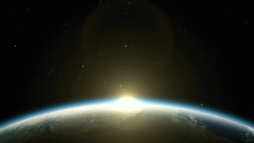

___________________________________________________________________________________________________________________________________________________________________
The Big Bang Theory
The Big Bang Theory is the leading explanation for how the universe began. Simply put, it says the universe as we know it started with an infinitely hot and dense single point that inflated and stretched — first at unimaginable speeds, and then at a more measurable rate — over the next 13.7 billion years to the still-expanding cosmos that we know today.
___________________________________________________________________________________________________________________________________________________________________

Stars of The Universe
Astronomers estimate that the universe could contain up to one septillion stars – that’s a one followed by 24 zeros. Our Milky Way alone contains more than 100 billion, including our most well-studied star, the Sun.
Stars are giant balls of hot gas – mostly hydrogen, with some helium and small amounts of other elements. Every star has its own life cycle, ranging from a few million to trillions of years, and its properties change as it ages.
✍️: https://science.nasa.gov/universe/stars/
___________________________________________________________________________________________________________________________________________________________________
